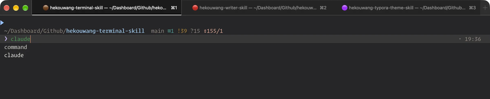

Claude Code · Cursor · AI agentsClaude Code · Cursor · AI 编程
Your terminal,
rebuilt for AI.
AI 时代的终端
值得重新配一次
Four Agent tabs look identical? ERROR drowned in logs? Settings lost on new machine? This Skill fixes all three — and the AI can run it too. 四个 Agent 标签长得一样？ERROR 淹没在日志里？换台电脑又要从头配？这份 Skill 一并解决——而且 AI 能直接调用。
❯ ~/proj main ❯ eza --group-directories-first assets/ README.md build.sh run.sh ❯ git diff --stat app/main.lua | 4 ++-- 1 file changed, 2 insertions(+), 2 deletions(-) + spawn("agent --watch") - pcall(loadfile("agent")) ❯▍ [ERROR] exit 1 [WARN] retry 2/5 [SUCCESS] done
Free vs Pro — real screenshots 免费版 vs 专业版，真机截图


Same machine · same commands · only the palette differs 同一台机器 · 同一条命令 · 只差一份色板
01
ERROR in red.
No more eye-scanning.
ERROR 自动标红
不用肉眼扫
Agent dumps 300 lines — where's the problem? Triggers mark ERROR / WARN / SUCCESS on the fly. Agent 吐 300 行日志，问题在哪？Triggers 实时标出 ERROR / WARN / SUCCESS。
ERROR
red highlight红色高亮
WARN
amber highlight琥珀高亮
SUCCESS
green highlight绿色高亮
Password:
popup manager弹出密码管理
4 Trigger rules ship with the Profile4 条 Triggers 规则随 Profile 交付
02
You say the moment.
The workbench changes the frame.
你说出场合
工作台改画面
daily · focus · present · record · remote — each one command. 日常 · 专注 · 演示 · 录屏 · 远程 —— 各一条命令。
scene.sh apply daily | focus | present | record | remote
03
Which tab is which Agent?
cd in, and the tab colors itself.
哪个 tab 是哪个 Agent？
cd 进项目，标签自己变色
Register a project once — after that, cd colors the tab and prints the project name top-right. Colors re-derive from the current theme, so a re-skin never breaks ranks. Run a few AI CLIs side by side and still tell them apart at a glance.
项目登记一次，之后 cd 进去标签自动变色、右上角印上项目名。颜色从当前主题色板重算，换肤不脱队——同时开几个 AI CLI 会话也一眼分清。
# 登记一次 $ ./scripts/workspace.sh add ~/code/某项目 # 之后 cd 进去：tab 自动变色 + 印上项目名 $ cd ~/code/某项目

workspace.sh · Pro buildworkspace.sh · 专业版
Start from your scene从你的场景开始
./scripts/scene.sh apply record|presentcd in and the tab colors itself.登记一次，cd 进项目 tab 自动变色。./scripts/workspace.sh add <path>Scene engine and project workspaces are Pro. The free build still has doctor, theme switching, and the semantic layer.场景引擎与项目工作区为专业版能力；免费版可用体检、换肤、语义层。
Start free.
Upgrade when you need the full chain.
先免费装
需要全链时再升级
$ git clone https://github.com/huiyonghkw/hekouwang-terminal-lite-skill.git $ cd hekouwang-terminal-lite-skill $ ./scripts/install.sh --dry-run # 先预演 $ ./scripts/install.sh
New machine? ./scripts/sync.sh --state-export exports pinned state; --state-import restores it in one go.换机？./scripts/sync.sh --state-export 导出钉住状态，新机 --state-import 一条还原
macOS only · No fonts shipped · Detects what you have仅 macOS · 不分发字体 · 探测本机字体